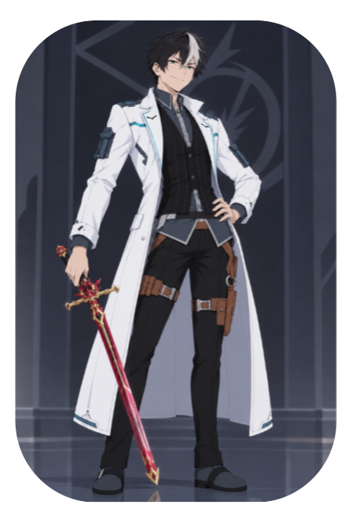

Personagem de
Além da Via Láctea
Neo
Aishyne
Salleh
“Sou apenas um galaxzoólogo em serviço.”
Personagem de
Além da Via Láctea
“Sou apenas um galaxzoólogo em serviço.”

Possui uma personalidade excêntrica. Ele não tem muito filtro social. Geralmente está de bom humor e gosta de provocar. Apesar de tudo, tem um senso de justiça que dificilmente ignora.
Neo Aishyne Sálleh é um galaxzoólogo e policial da Autoridade Intergaláctica.
Veio do planeta Sálleh. Foi treinado no Império e na Autoridade Intergaláctica.
Neo sempre teve paixão pela zoologia do seu planeta, desde os dez anos. Isso se intensificou até chegar a uma escala galáctica.
Por conta disso, ele costuma investigar contrabandos e crimes usando fauna de outros planetas. Por ser de sua área, possui vantagem de conhecimento.
Ele em si não é muito famoso, mas possui grande contribuição com a unidade em que trabalha. Ele pode ser considerado forte, inteligente.
Neo é fruto de uma relação entre o marido e a conselheira da imperatriz, Dimitra. Foi descoberto o nascimento após o homem querer o aborto dele para omitir provas, mas a conselheira, Han-Xin, possuindo um certo trauma por esse assunto, negou. Ela confessou para a Dimitra a traição. Inicialmente, Dimitra pretendia executar apenas o marido, pois a Han-Xin demonstrou arrependimento. Entretanto, a própria conselheira pediu para ser executada por traição à própria amiga e imperatriz, como também ao seu Criador, por se entregar à carne. Antes de morrer, elas esperaram o bebê nascer e o chamaram de Neo.
Neo foi criado no palácio de Salleh, lar da Imperatriz intergalática, Dimitra, sendo um bebê destinado à servidão. Dimitra desenvolveu um afeto maternal por ele, mas não podia demonstrar isso diretamente, porque perderia influência ao ajudar a "Vergonha de Salleh", logo, perderia poder. Sendo criança, ele recebeu somente o necessário, sem privilégios.
Comida, um quarto, ensino, etc.
Aos 10 anos de idade, começou a trabalhar na servidão, sob a supervisão de Phila, empregada-chefe do lugar. Dimitra o tratava com uma atenção levemente maior do que os outros servos, mas sem perder a formalidade de ama dele. A nobreza e a guarda, por outro lado, sabendo exatamente quem é ele, não tratavam bem. Neo passou a infância sendo desprezado por quase todos quando estava sem supervisão. Era salvo somente pela Phila ou Dimitra, quando ouviam um grito do garoto ou passavam ocasionalmente e puniam por desrespeito aos servos do palácio.
Aos 15 anos, como de costume do palácio dos menores, os servos eram treinados. Mesmo começando com um Katsa pequeno, pelo elemento e tamanho do Koor, foi decidido investir em aumentar a capacidade de éter e desenvolvimento de magias de acordo com os elementos.
Chegou o momento em que ele, aos 20, teve o direito de escolher entre a servidão, o exército e a liberdade. Com o objetivo de seguir seus sonhos, escolheu a liberdade. Ao se retirar, estudou e viajou pela galáxia. Ele, por conta própria, ingressou na Autoridade Intergalática.
Atualmente, possui 38 anos de idade.